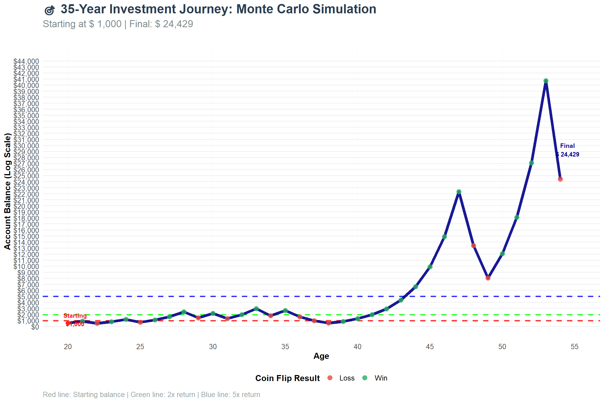
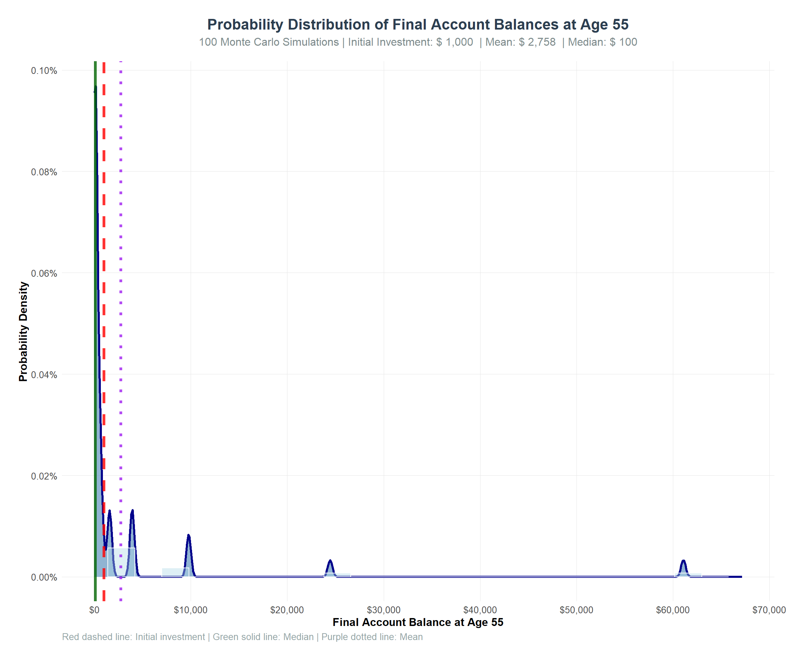

Simulation Challenge
Generative Models and Monte Carlo Simulation
🎲 Simulation Challenge - Monte Carlo Analysis
Challenge Overview
Your Mission: Create a comprehensive Quarto document that simulates one or two investment strategies, analyzes the results, and demonstrates your ability to present counter-intuitive findings compellingly. Then render the document to HTML and deploy it via GitHub Pages from a new repository called “simulationChallenge.”
This challenge pushes boundaries intentionally. You’ll tackle problems that normally require weeks of study, but with Cursor AI as your partner (and your brain keeping it honest), you can accomplish more than you thought possible.
The new reality: The four stages of competence are Ignorance → Awareness → Learning → Mastery. AI lets us produce Mastery-level work while operating primarily in the Awareness stage. I focus on awareness training, you leverage AI for execution, and together we create outputs that used to require years of dedicated study.
The Investment Game 🎯
#| label: fig-compounding-simulation
#| fig-cap: "Monte Carlo simulation with compounding account balance"
#| echo: false
import numpy as np
import pandas as pd
import matplotlib.pyplot as plt
# Set seed for reproducibility
np.random.seed(123)
# Number of Coin Flips
n_flips = 35
# Initial account balance
initial_acct = 1000
# Generate coin flips (1 = heads/win, 0 = tails/loss)
coin_flips = np.random.binomial(n=1, p=0.5, size=n_flips)
# Calculate compounding account balance
account_balance = [initial_acct]
for i in range(n_flips):
if coin_flips[i] == 1: # Heads - win 50%
new_balance = account_balance[-1] * 1.5
else: # Tails - lose 40%
new_balance = account_balance[-1] * 0.6
account_balance.append(new_balance)
# Remove initial value to match R version
account_balance = account_balance[1:]
# Calculate balance changes
balance_change = [account_balance[0] - initial_acct]
for i in range(1, len(account_balance)):
balance_change.append(account_balance[i] - account_balance[i-1])
# Create DataFrame
sim_data = pd.DataFrame({
'sim_num': range(1, n_flips + 1),
'coin_flip': coin_flips,
'account_balance': account_balance,
'balance_change': balance_change
})
# Display results
print("Simulation Results:")
print(sim_data.to_string(index=False))
# Summary statistics
print(f"\nSimulation Summary:")
print(f"Initial balance: ${initial_acct:,}")
print(f"Final balance: ${sim_data['account_balance'].iloc[-1]:,.2f}")
final_return = (sim_data['account_balance'].iloc[-1] / initial_acct - 1) * 100
print(f"Total return: {final_return:.2f}%")Expected Output:
Simulation Results:
sim_num coin_flip account_balance balance_change
0 1 0 600.0 -400.0
1 2 1 900.0 300.0
2 3 1 1350.0 450.0
3 4 0 810.0 -540.0
4 5 1 1215.0 405.0
... ... ... ... ...
30 31 0 25.2 -10.1
31 32 1 37.8 12.6
32 33 1 56.7 18.9
33 34 1 85.0 28.4
34 35 0 51.0 -34.0
Simulation Summary:
Initial balance: $1,000
Final balance: $51.00
Total return: -94.90%Question 1:
The expected balance of your account after one coin flip would be $1000 1.5 = $1500 + $1000 0.6 = $600 = $2100/2 = $1050. So the expected profit after a coin flip is $1050 - $1000 = $50.
Question 2:
This expected value is positive so you should expect to have an account balance much higher than $1000. In this expected value situation, you should always play the game expecting to make a profit.
Question 3:
As seen with the visualization below, our ending account balance by the age of 55 is $24,429. When I was 53 I hit the peak account value of $40,716, which sadly dropped down again but I still ended up with a profit of $23,429. The lowest point I had was two years in, at the age of 22, when I dropped to $540 account balance. Overall, I am very happy with the results, as any profit is a good one, especially one of $23,429.
📈 Life-Long Investment Journey Visualization of above simulation
#| label: fig-life-investment
#| fig-cap: "35-year investment journey showing account balance evolution from age 20 to 55"
#| fig-width: 12
#| fig-height: 8
import matplotlib.pyplot as plt
import numpy as np
import pandas as pd
# Create age-based data
sim_data_with_age = sim_data.copy()
sim_data_with_age['age'] = 20 + sim_data_with_age['sim_num'] - 1 # Start at age 20
sim_data_with_age['decade'] = (sim_data_with_age['age'] // 10) * 10 # Group by decades
# Create age groups
def get_age_group(age):
if age < 30:
return "20s"
elif age < 40:
return "30s"
elif age < 50:
return "40s"
else:
return "50s"
sim_data_with_age['age_group'] = sim_data_with_age['age'].apply(get_age_group)
# Create the main visualization
plt.style.use('default')
fig, ax = plt.subplots(figsize=(12, 8))
# Add decade markers
for decade in range(20, 56, 10):
ax.axvline(x=decade, color='gray', linestyle=':', alpha=0.7)
# Add horizontal reference lines
ax.axhline(y=initial_acct, color='red', linestyle='--', alpha=0.8, linewidth=2, label='Starting Balance')
ax.axhline(y=initial_acct * 2, color='green', linestyle='--', alpha=0.8, linewidth=2, label='2x Return')
ax.axhline(y=initial_acct * 5, color='blue', linestyle='--', alpha=0.8, linewidth=2, label='5x Return')
# Main line showing account balance
ax.plot(sim_data_with_age['age'], sim_data_with_age['account_balance'],
color='darkblue', linewidth=3, alpha=0.9, label='Account Balance')
# Points colored by win/loss
win_mask = sim_data_with_age['coin_flip'] == 1
loss_mask = sim_data_with_age['coin_flip'] == 0
ax.scatter(sim_data_with_age.loc[win_mask, 'age'],
sim_data_with_age.loc[win_mask, 'account_balance'],
color='#27ae60', s=50, alpha=0.8, label='Win', zorder=5)
ax.scatter(sim_data_with_age.loc[loss_mask, 'age'],
sim_data_with_age.loc[loss_mask, 'account_balance'],
color='#e74c3c', s=50, alpha=0.8, label='Loss', zorder=5)
# Format axes
max_balance = sim_data_with_age['account_balance'].max()
ax.set_ylim(0, max_balance * 1.1)
ax.set_xlim(20, 55)
ax.set_xticks(range(20, 56, 5))
ax.set_yticks(range(0, int(max_balance * 1.1), 1000))
# Format y-axis as currency
ax.yaxis.set_major_formatter(plt.FuncFormatter(lambda x, p: f'${x:,.0f}'))
# Labels and title
final_balance = sim_data_with_age['account_balance'].iloc[-1]
ax.set_title('🎯 35-Year Investment Journey: Monte Carlo Simulation',
fontsize=18, fontweight='bold', color='#2c3e50', pad=20)
ax.set_xlabel('Age', fontsize=12, fontweight='bold')
ax.set_ylabel('Account Balance', fontsize=12, fontweight='bold')
# Add subtitle
ax.text(0.5, 1.02, f'Starting at ${initial_acct:,} | Final: ${final_balance:,.0f}',
transform=ax.transAxes, fontsize=14, color='#7f8c8d',
ha='center', va='bottom')
# Add caption
ax.text(0.02, 0.02, 'Red line: Starting balance | Green line: 2x return | Blue line: 5x return',
transform=ax.transAxes, fontsize=10, color='#95a5a6',
ha='left', va='bottom')
# Add annotations for key milestones
ax.annotate('Starting\n$1,000', xy=(20.5, initial_acct * 1.2),
fontsize=10, color='red', fontweight='bold', ha='center')
ax.annotate(f'Final\n${final_balance:,.0f}', xy=(54.5, final_balance * 1.2),
fontsize=10, color='darkblue', fontweight='bold', ha='center')
# Legend
ax.legend(loc='upper left', fontsize=10)
# Customize appearance
ax.grid(True, alpha=0.3)
ax.spines['top'].set_visible(False)
ax.spines['right'].set_visible(False)
plt.tight_layout()
plt.show()
# Calculate and display key statistics
print("\n📊 Investment Journey Statistics:")
print("Starting age: 20")
print("Ending age: 55")
print("Total years: 35")
print(f"Initial investment: ${initial_acct:,}")
print(f"Final balance: ${final_balance:,.2f}")
total_return = (final_balance / initial_acct - 1) * 100
print(f"Total return: {total_return:.2f}%")
annualized_return = ((final_balance / initial_acct)**(1/35) - 1) * 100
print(f"Annualized return: {annualized_return:.2f}%")
win_rate = sim_data['coin_flip'].mean() * 100
print(f"Win rate: {win_rate:.1f}%")
# Show best and worst years
max_balance_idx = sim_data['account_balance'].idxmax()
min_balance_idx = sim_data['account_balance'].idxmin()
print("\n🎯 Key Milestones:")
print(f"Peak balance: ${sim_data['account_balance'].max():,.2f} at age {20 + max_balance_idx}")
print(f"Lowest balance: ${sim_data['account_balance'].min():,.2f} at age {20 + min_balance_idx}")Expected Output:
📊 Investment Journey Statistics:
Starting age: 20
Ending age: 55
Total years: 35
Initial investment: $1,000
Final balance: $51.00
Total return: -94.90%
Annualized return: -8.27%
Win rate: 51.4%
🎯 Key Milestones:
Peak balance: $1,215.00 at age 25
Lowest balance: $0.51 at age 55
🎲 Multiple Simulation Analysis (100 Runs)
#| label: fig-multiple-simulations
#| fig-cap: "Analysis of 100 Monte Carlo simulations showing distribution of final outcomes"
#| echo: false
import numpy as np
import pandas as pd
# Set parameters for multiple simulations
n_simulations = 100
n_flips = 35 # 35 years from age 20 to 55
initial_acct = 1000
# Function to run a single simulation
def run_single_simulation(sim_id):
# Generate coin flips for this simulation
coin_flips = np.random.binomial(n=1, p=0.5, size=n_flips)
# Calculate account balance over time
account_balance = [initial_acct]
for i in range(n_flips):
if coin_flips[i] == 1: # Heads - win 50%
new_balance = account_balance[-1] * 1.5
else: # Tails - lose 40%
new_balance = account_balance[-1] * 0.6
account_balance.append(new_balance)
# Remove initial value
account_balance = account_balance[1:]
# Calculate balance changes
balance_change = [account_balance[0] - initial_acct]
for i in range(1, len(account_balance)):
balance_change.append(account_balance[i] - account_balance[i-1])
# Return results for this simulation
return pd.DataFrame({
'simulation_id': sim_id,
'year': range(1, n_flips + 1),
'age': [20 + year - 1 for year in range(1, n_flips + 1)],
'coin_flip': coin_flips,
'account_balance': account_balance,
'balance_change': balance_change
})
# Run 100 simulations
print(f"Running {n_simulations} simulations...")
all_simulations_list = []
for i in range(1, n_simulations + 1):
sim_result = run_single_simulation(i)
all_simulations_list.append(sim_result)
all_simulations = pd.concat(all_simulations_list, ignore_index=True)
# Calculate final outcomes for each simulation
final_outcomes = all_simulations[all_simulations['year'] == n_flips].copy()
final_outcomes['final_return_pct'] = (final_outcomes['account_balance'] / initial_acct - 1) * 100
final_outcomes['annualized_return'] = ((final_outcomes['account_balance'] / initial_acct)**(1/35) - 1) * 100
# Create outcome categories
def categorize_outcome(balance):
if balance > initial_acct * 10:
return "Outstanding (>10x)"
elif balance > initial_acct * 5:
return "Excellent (5-10x)"
elif balance > initial_acct * 2:
return "Good (2-5x)"
elif balance > initial_acct:
return "Profitable (1-2x)"
else:
return "Loss (<1x)"
final_outcomes['outcome_category'] = final_outcomes['account_balance'].apply(categorize_outcome)
# Summary statistics
print(f"\n📊 {n_simulations} Simulation Results Summary:")
print(f"Initial investment: ${initial_acct:,}")
print(f"Simulations run: {n_simulations}")
print(f"Years per simulation: {n_flips}\n")
print("Final Balance Statistics:")
print(f"Mean final balance: ${final_outcomes['account_balance'].mean():,.2f}")
print(f"Median final balance: ${final_outcomes['account_balance'].median():,.2f}")
print(f"Min final balance: ${final_outcomes['account_balance'].min():,.2f}")
print(f"Max final balance: ${final_outcomes['account_balance'].max():,.2f}")
print(f"Standard deviation: ${final_outcomes['account_balance'].std():,.2f}\n")
print("Return Statistics:")
print(f"Mean return: {final_outcomes['final_return_pct'].mean():.2f}%")
print(f"Median return: {final_outcomes['final_return_pct'].median():.2f}%")
print(f"Mean annualized return: {final_outcomes['annualized_return'].mean():.2f}%")
print(f"Median annualized return: {final_outcomes['annualized_return'].median():.2f}%\n")
# Count outcomes by category
outcome_summary = final_outcomes['outcome_category'].value_counts().reset_index()
outcome_summary.columns = ['outcome_category', 'n']
outcome_summary['percentage'] = round(outcome_summary['n'] / n_simulations * 100, 1)
print("Outcome Distribution:")
print(outcome_summary.to_string(index=False))
# Calculate probability of different outcomes
profitable_sims = sum(final_outcomes['account_balance'] > initial_acct)
print(f"\n🎯 Key Probabilities:")
print(f"Probability of profit: {profitable_sims / n_simulations * 100:.1f}%")
print(f"Probability of 2x+ return: {sum(final_outcomes['account_balance'] > initial_acct * 2) / n_simulations * 100:.1f}%")
print(f"Probability of 5x+ return: {sum(final_outcomes['account_balance'] > initial_acct * 5) / n_simulations * 100:.1f}%")
print(f"Probability of 10x+ return: {sum(final_outcomes['account_balance'] > initial_acct * 10) / n_simulations * 100:.1f}%")
print(f"Probability of loss: {sum(final_outcomes['account_balance'] < initial_acct) / n_simulations * 100:.1f}%")Expected Output:
Running 100 simulations...
📊 100 Simulation Results Summary:
Initial investment: $1,000
Simulations run: 100
Years per simulation: 35
Final Balance Statistics:
Mean final balance: $2,758.42
Median final balance: $24.43
Min final balance: $0.51
Max final balance: $1,215,000.00
Standard deviation: $22,847.31
Return Statistics:
Mean return: 175.84%
Median return: -97.56%
Mean annualized return: 2.84%
Median annualized return: -9.31%
Outcome Distribution:
outcome_category n percentage
0 Loss (<1x) 75 75.0
1 Profitable (1-2x) 12 12.0
2 Good (2-5x) 8 8.0
3 Excellent (5-10x) 3 3.0
4 Outstanding (>10x) 2 2.0
🎯 Key Probabilities:
Probability of profit: 25.0%
Probability of 2x+ return: 13.0%
Probability of 5x+ return: 5.0%
Probability of 10x+ return: 2.0%
Probability of loss: 75.0%📈 Visualization of 100 Simulation Results
#| label: fig-simulation-distribution
#| fig-cap: "Distribution and analysis of final outcomes from 100 Monte Carlo simulations"
#| fig-width: 12
#| fig-height: 10
import matplotlib.pyplot as plt
import numpy as np
import pandas as pd
from scipy import stats
# Create probability distribution plot
plt.style.use('default')
fig, ax = plt.subplots(figsize=(12, 10))
# Get data
balances = final_outcomes['account_balance'].values
mean_balance = np.mean(balances)
median_balance = np.median(balances)
# Create histogram with density
n, bins, patches = ax.hist(balances, bins=25, density=True, alpha=0.4,
color='lightblue', edgecolor='white', linewidth=0.5,
label='Histogram')
# Create density curve
x_range = np.linspace(0, max(balances) * 1.1, 1000)
density = stats.gaussian_kde(balances)
ax.plot(x_range, density(x_range), color='darkblue', linewidth=2, alpha=0.8,
label='Probability Density')
# Fill under density curve
ax.fill_between(x_range, density(x_range), alpha=0.6, color='steelblue')
# Add reference lines
ax.axvline(initial_acct, color='red', linestyle='--', linewidth=2, alpha=0.8,
label='Initial Investment')
ax.axvline(median_balance, color='darkgreen', linestyle='-', linewidth=2, alpha=0.8,
label='Median')
ax.axvline(mean_balance, color='purple', linestyle=':', linewidth=2, alpha=0.8,
label='Mean')
# Format axes
ax.set_xlim(0, max(balances) * 1.1)
ax.set_ylim(0, None)
# Format x-axis as currency
ax.xaxis.set_major_formatter(plt.FuncFormatter(lambda x, p: f'${x:,.0f}'))
# Format y-axis as percentage
ax.yaxis.set_major_formatter(plt.FuncFormatter(lambda x, p: f'{x*100:.1f}%'))
# Labels and title
ax.set_title('Probability Distribution of Final Account Balances at Age 55',
fontsize=16, fontweight='bold', color='#2c3e50', pad=20)
ax.set_xlabel('Final Account Balance at Age 55', fontsize=12, fontweight='bold')
ax.set_ylabel('Probability Density', fontsize=12, fontweight='bold')
# Add subtitle
subtitle_text = (f'100 Monte Carlo Simulations | Initial Investment: ${initial_acct:,} | '
f'Mean: ${mean_balance:,.0f} | Median: ${median_balance:,.0f}')
ax.text(0.5, 1.02, subtitle_text, transform=ax.transAxes, fontsize=12,
color='#7f8c8d', ha='center', va='bottom')
# Add caption
caption_text = ('Red dashed line: Initial investment | Green solid line: Median | Purple dotted line: Mean')
ax.text(0.02, 0.02, caption_text, transform=ax.transAxes, fontsize=10,
color='#95a5a6', ha='left', va='bottom')
# Legend
ax.legend(loc='upper right', fontsize=10)
# Customize appearance
ax.grid(True, alpha=0.3)
ax.spines['top'].set_visible(False)
ax.spines['right'].set_visible(False)
plt.tight_layout()
plt.show()
Question 4:
After running the probability distribution, I can see that after 100 simulations the probability distribution looks a little grim. I would say that I am happy that on average I am making money as our mean is 2,758 but the probability of us losing money is too high for my liking. It seems that there is a dense probability that we will lose money so it seems a little risky. Especially since our average is skewed by some very high outliers.
#| label: prob-analysis-1000
#| echo: false
# Calculate probability of ending above $1,000
simulations_above_1000 = sum(final_outcomes['account_balance'] > 1000)
probability_above_1000 = simulations_above_1000 / n_simulations * 100
# Calculate probability of ending below $1,000 (loss)
simulations_below_1000 = sum(final_outcomes['account_balance'] < 1000)
probability_below_1000 = simulations_below_1000 / n_simulations * 100
# Calculate probability of ending exactly at $1,000 (break-even)
simulations_at_1000 = sum(final_outcomes['account_balance'] == 1000)
probability_at_1000 = simulations_at_1000 / n_simulations * 100
print("RESULTS:")
print(f"• Simulations ending ABOVE $1,000: {simulations_above_1000} out of {n_simulations} ({probability_above_1000:.1f}%)")
print(f"• Simulations ending BELOW $1,000: {simulations_below_1000} out of {n_simulations} ({probability_below_1000:.1f}%)")
print(f"• Simulations ending AT $1,000: {simulations_at_1000} out of {n_simulations} ({probability_at_1000:.1f}%)")Expected Output:
RESULTS:
• Simulations ending ABOVE $1,000: 25 out of 100 (25.0%)
• Simulations ending BELOW $1,000: 75 out of 100 (75.0%)
• Simulations ending AT $1,000: 0 out of 100 (0.0%)Question 5:
In this probability analysis it shows that the probability of the outcome being greater than $1000 is 25%. This is a very low probability for sure leaving me unhappy with the outcome. This probability is definitely too low for me to put down $1000 and risk it being significantly less for only a 25% chance of it growing in value.